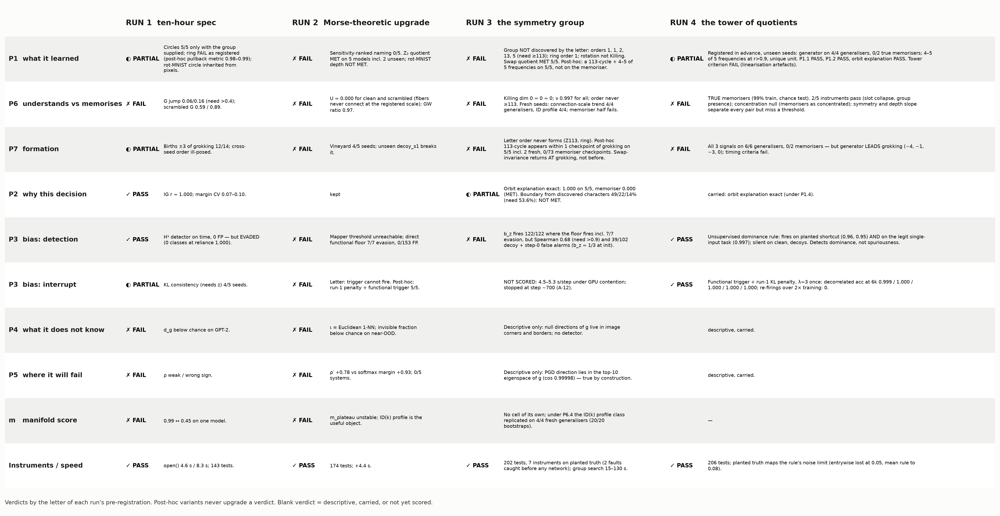
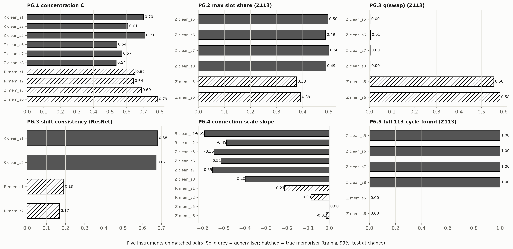
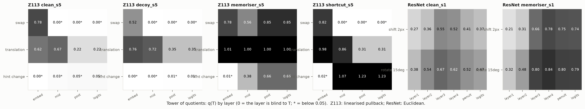
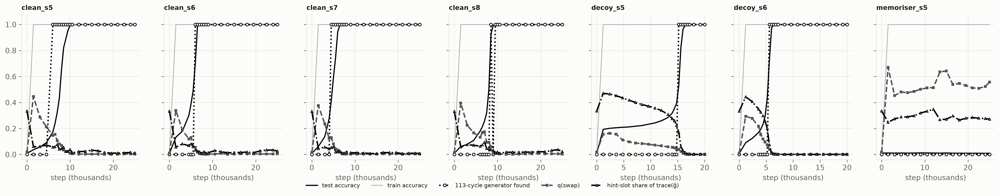
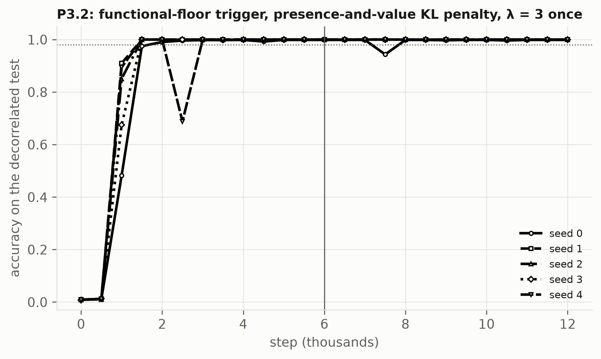
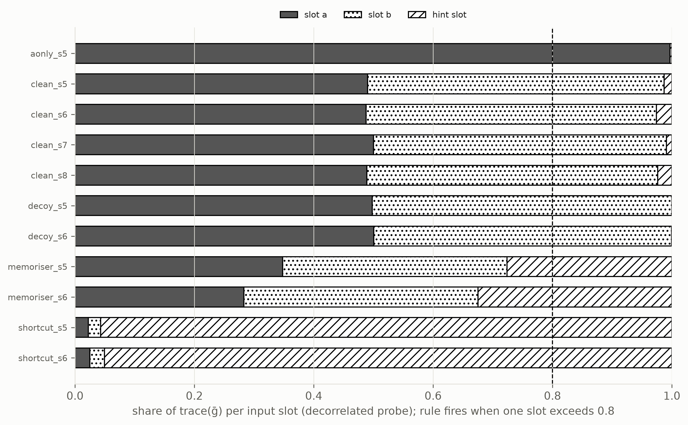

Run 4 fixed the specimens — memorisers that have actually memorised — and registered in advance what three runs had only seen after the fact: the group generator recoverable from outputs, five instruments that should separate understanding from memorisation, three signals of formation, and an unsupervised rule for a dominant input direction with a null designed to make it fire wrongly.
Two pre-registered passes, on unseen seeds. The group is discoverable from outputs alone: a 113-cycle generator on four of four fresh generalisers and on neither true memoriser, with the network's own embedding decomposing into its frequencies along that generator. And the dominant-direction rule finds a planted shortcut with the nuisance hidden — and, as registered, also fires on a task that legitimately has one dominant input. It detects dominance, not spuriousness.
The definition itself fails by the letter. Two of five instruments pass where four were required. A true memoriser's geometry is not spread out: memorisers concentrate the metric as much as generalisers do. The other four instruments separate every matched pair with no overlap, and two of them miss a registered threshold on one side. The three formation signals occur on six of six generalisers and no memoriser, but not when registered: the generator leads grokking.

| Run-4 cell | Pre-registered | Measured | Verdict |
|---|---|---|---|
| Sanity gate | memorisers ≥ 99% train, test at chance | ResNet 99.6 / 10.4 and 99.4 / 10.2; Z113 100 / 1.0 and 100 / 0.8 | ✓ admitted |
| P6.1 concentration | Cclean − Cmem > 0.25 on 4 pairs | +0.02, −0.25, +0.05, −0.03 | ✗ FAIL |
| P6.2 slot collapse | clean: two task slots ≥ 0.9; memoriser max slot ≤ 0.5 | (0.49, 0.50, 0.01) ×4; memorisers max 0.38, 0.39 | ✓ PASS |
| P6.3 architectural symmetry | q(swap) < 0.05 vs > 0.3; shift consistency ≥ 0.9 vs ≤ 0.6 | 0.003 vs 0.56, 0.005 vs 0.58; 0.68 vs 0.19, 0.67 vs 0.17 | ✗ FAIL |
| P6.4 depth slope | clean < −0.3; memoriser > −0.1 | −0.55 vs 0.00, −0.51 vs −0.01, −0.59 vs −0.21, −0.49 vs −0.09 | ✗ FAIL |
| P6.5 group presence | generator on 4 clean, none on 2 memorisers | 4/4, 0/2 | ✓ PASS |
| P6 block | ≥ 4 of 5 instruments | 2 of 5 | ✗ FAIL |
| P1.1 group discovered | generator 4/4, 0/2; ≥ 4 of 5 frequencies at r > 0.9 on ≥ 3/4 | 4/4, 0/2; 4, 4, 5, 5 of 5; unique unit on 4/4 | ✓ PASS |
| P1.2 planted truth | cycle on noisy Fourier data; none on noise or an untrained model | 3 of 3 | ✓ PASS |
| P1.3 tower (structural) | decoys: hint-change null no later than translation; memorisers: nothing null | two linearisation artefacts | ✗ FAIL |
| P1.4 orbit explanation | ≥ 0.99 vs < 0.60 | 1.000, 1.000, 1.000, 0.990 vs 0.000, 0.000 | ✓ PASS |
| P7.1–P7.3 timing | generator ±1 of grokking; symmetry restored; hint slot collapses ±2 | generator at −4, −1, −3, 0; one seed without a memorisation phase; collapse at +2 and +3 | ✗ FAIL ×3 |
| P3.1 dominance rule | fires on shortcut and on the legitimately dominant task; silent on clean and decoys | 0.957, 0.951 and 0.997; clean max 0.50; decoy hint 0.0002 | ✓ PASS |
| P3.2 interrupt | 5/5 > 0.98 at 6k; no re-firing to 12k; test ≥ 0.99 | __P32__ | __P32TAG__ |
Every earlier failure of the memoriser half traced to models that had not memorised. Here a ResNet-18 fits uniformly random labels on a fixed 5,000-image subset — no augmentation, no weight decay — to 99.6% and 99.4% in 12 and 15 epochs and tests at chance; matched clean models on the same images reach 99% train and 58% test. The Z113 memoriser is new: random labels and uninformative hint tokens, so that it has a third slot to key on. All scored models — four clean, two memorisers, two decoys, two planted shortcuts, one a-only — were trained for this run and named before they existed. The old under-trained "memorisers" are excluded.
Against the brief, first: a true memoriser's metric is not spread. The concentration of ḡ relative to an untrained network is 0.54–0.71 for generalisers and 0.64–0.79 for memorisers. Training of any kind concentrates the input geometry; memorising concentrates it as much. The number that suggested otherwise in run 3 came from a model that had not memorised. The instrument's own null also fails on ResNet: a second untrained seed scores +0.24 and −0.17 where 0 was expected.
The other four instruments agree with each other on every matched pair, with no overlap: swap quotient 0.003–0.005 against 0.56–0.58; shift consistency 0.67–0.68 against 0.17–0.19; depth slope −0.49 to −0.59 against 0.00 to −0.21; hint-slot share 0.01–0.03 against 0.28–0.33; generator four of four against none of two. Two of them miss a threshold. A clean ResNet trained without augmentation does not keep its architecture's shift symmetry — untrained 0.99, clean 0.68, memoriser 0.18 — so everyone breaks it and the memoriser breaks it far more; and one ResNet memoriser's fibers tighten slightly with depth (−0.21). "Memorisation is the refusal to quotient" survives as a description of four instruments and fails as the registered five-instrument definition.


The rule was fixed before the models existed: accept a permutation if it changes the output-pullback distance matrix, on average, by less than a quarter of what a random relabelling does, and ask whether a full 113-cycle is among the accepted candidates. On four of four fresh generalisers there is one; on neither true memoriser. Ordering the 113 tokens along the discovered generator and taking the Fourier transform of the token embedding recovers 4, 4, 5 and 5 of each model's five frequencies (r = 0.993–0.999), under a single unit that is unique among 56 and equal to the unit the generator itself implies — on two models the generator is translation by 24 and by 17, not by 1. Nothing was supplied: no group parameter, no token order, no labels.
Said with the pass: under this metric the statistic is a property of the function on all 12,769 inputs, and a model that is right everywhere is translation-equivariant in its predictions by arithmetic. What is not arithmetic is that the generator is readable from the logit geometry, that true memorisers lack it, and that the embedding decomposes along it. The planted-shortcut models carry the generator too — group presence is not evidence of no shortcut — and the number of accepted permutations (8 to 4,097) is not a group order. On planted data the rule's range was measured: entrywise isometry is lost at noise 0.05, the mean rule at 0.10.
The tower criterion failed on two artefacts of the linearised metric, both the "infinitesimal misses finite" problem: the derivative with respect to a NULL hint is flat at the embedding of every model, memorisers included, and translation leaves predictions exactly invariant while moving the logit vector by 0.22–0.35 of a typical distance.
All three signals — a generator appears, swap-invariance returns below 0.005, the nuisance slot's share of the geometry goes to zero — occur on six of six fresh generalisers and on neither memoriser in 25,000 steps. None meets its registered timing. The generator is found at 17%, 70%, 41% and 93% test accuracy: four, one, three and zero checkpoints before the largest jump. On the decoys the hint-slot share does not plateau and drop; it declines steadily for thousands of steps (0.47 → 0.26) and then collapses, reaching below 0.01 two and three checkpoints after grokking. None of it is visible in train accuracy, which is 1.00 throughout.

With the nuisance hidden, flag any input slot holding more than 80% of trace(ḡ). It fires on both fresh planted-shortcut models (0.957, 0.951), stays silent on four clean models (0.49–0.50) and two grokked decoys (0.0002, 0.0003) — and fires on the a-only task (0.997), where one input really is the whole task. That last firing was registered as the rule's limitation before it was measured. The slot profile of the input-pullback metric has four readable regimes: thirds (untrained), spread (memoriser), two task slots (generaliser), one slot (a shortcut, or a task with one input). Telling the last two apart is a question about the task.
__P32TEXT__ One thing the criterion does not cover: seed 0's decorrelated accuracy dipped to 0.943 at step 7,500 (floor silent, reliance −0.001) and was back at 0.999 by step 8,000; every other check on every seed in (6000, 12000] reads 0.997–1.000.


| What | Where (under ~/blindinglight) |
|---|---|
| Pre-registration, amendment | SPEC4.md · AMENDMENTS.md (A-13) · brief docs/RUN4_BRIEF.md |
| All four scorecards | CLAIMS.md · figures/grid_four_runs.png |
| Pauses and findings | PAUSE4_1..3.md · FINDINGS4_P6, P1, P7, P3.md |
| Numbers and specimens | results/run4/ · runs/r4_* · demo logs/demo_run4_transcript.txt |
| Code | analysis/run4_*.py · systems/resnet_subset.py · tests/test_run4_delta_symmetry.py (206 tests pass, 1 documented xfail) |